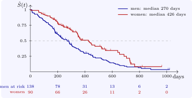

4.3 The median and reading the curve
The estimated median survival is the smallest time at which \(\hat S(t) \leq \frac 12\). A confidence interval for it (Brookmeyer and Crowley, 1982) consists of the times at which the pointwise interval for \(S\) contains \(\frac 12\): read it off where the lower and upper confidence curves cross \(\frac 12\). For lung the median is \(310\) days, with interval \(285\) to \(363\) days. If \(\hat S\) never falls to \(\frac 12\), the median is not estimable, a common situation when the treatment is effective or follow-up short, and survival at a fixed time is reported instead.
When reading a Kaplan–Meier plot:
- each drop is an event; tick marks show censored times;
- the number at risk should be shown below the axis, because the right-hand end of the curve rests on few subjects and is unreliable, however dramatic it looks;
- the last step does not mean that everyone dies: if the largest time is censored, the curve stops above zero, and nothing is known beyond it.
The median follow-up time, which tells the reader how mature the data are, is best estimated by the reverse Kaplan–Meier method, in which censoring is treated as the event and deaths as censored: for lung it is \(588\) days.

Questions on this section
Stuck on something here? Ask below and it stays attached to this topic.